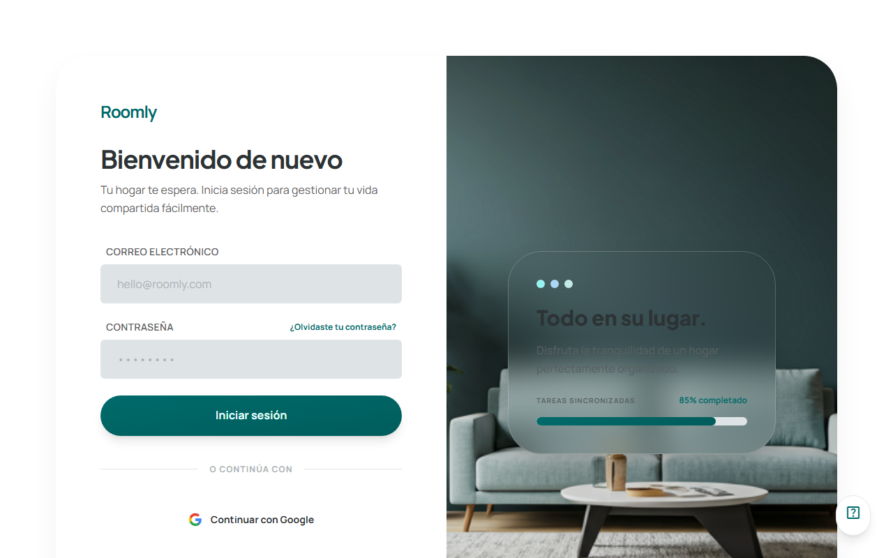
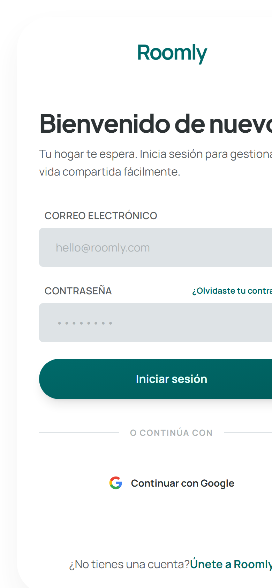

En producción · Proyecto integrado 2º DAW
Roomly · Gestor de pisos compartidos
Aplicación full-stack que reúne en un solo sitio todo lo que se gestiona en un piso compartido: gastos, tareas de limpieza, búsqueda de piso o compañeros y el chat de la casa.
- Reparto automático de gastos y deudas entre compañeros
- Chat en tiempo real con WebSockets
- Cuadrantes de limpieza con rotación automática
- Anuncios con filtros, favoritos y solicitudes para unirse
- Autenticación con email y Google, y correos transaccionales
- React 19
- Node.js
- Express
- Socket.IO
- Supabase
- PostgreSQL
- Vercel
- Render